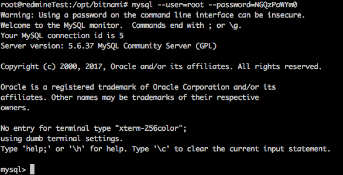

Reset password and give admin rights to redmine account
First of all run mysql:
mysql --user=root --password=your_password
You can find your connection parameters in {your redmine folder}/htdocs/config/database
If credentials are correct you will see hello message from MySql console: 
Now you need to reveal all databases on current mysql server, run this command:
SHOW DATABASES;
You will see something like this:
We need to select active database, choose something with word “redmine” in name, for me it “bitnami_redmine” and run command:
use your_database_name;
In my case it looked like this:
To reveal current users information you can use this command:
select * from users;
Then we can reset password and any other property for any user in this table. Example with admin user:
update users set hashed_password = '353e8061f2befecb6818ba0c034c632fb0bcae1b', salt ='' where login = 'admin';
Or you can reset password for regular user and make give it admin rights at the same time:
update users set hashed_password = '353e8061f2befecb6818ba0c034c632fb0bcae1b', salt ='', admin = 1 where login = 'user';
Now we can login to redmine with admin rights using password: **password
**for account you used in previous step.